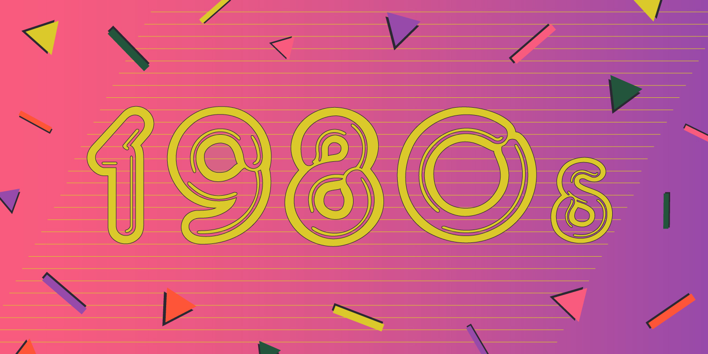
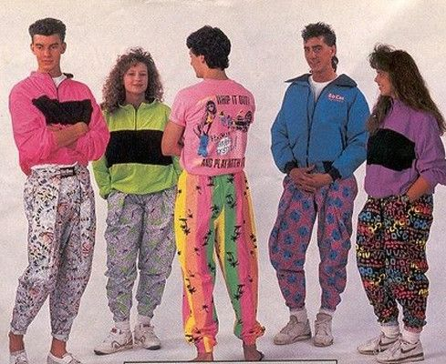
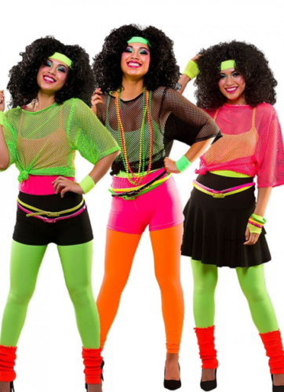

1980s

Facts about the 1980s
- Smiley emoticons were first used by computer scientist Scott Fahlman in 1982.
- In 1988, the first transatlantic optical cable was laid under the Atlantic Ocean.
- The first genetically modified crops were a product of the 1980s.
- The first sight of McDonald’s Chicken McNuggets was in 1981.
- Cable television did not have commercials until the 1980s,
- The reason for TV shows airing the message “we’ll be back after these messages” is due to a mandate by the FCC from the 1980s.
- Canada did not have official independence from the United Kingdom until 1982. 